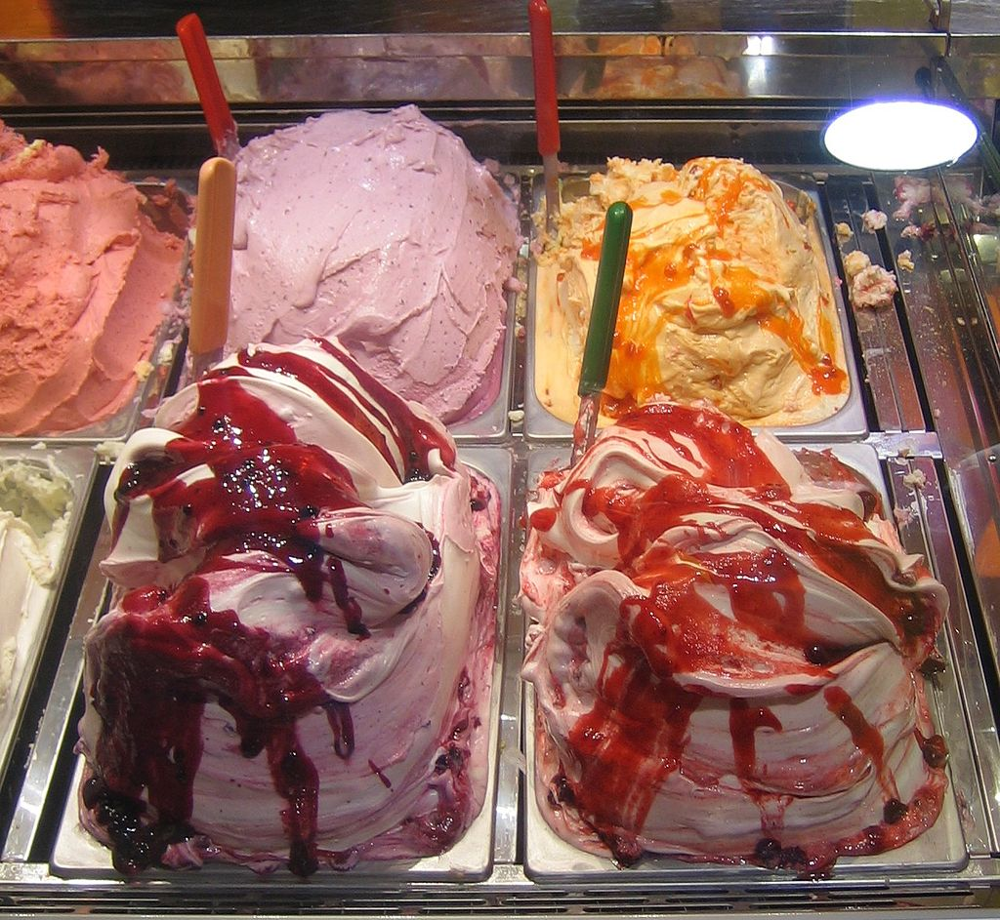
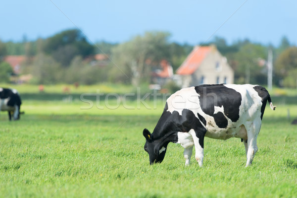

О нас
Мороженое — пищевой продукт-десерт, представляющий собой замороженную в процессе непрерывного взбивания массу, содержащую в основе своей питательные, вкусовые, ароматические и эмульгирующие вещества. К мороженому нередко относят также фруктовый лёд, получаемый простым замораживанием фруктово-ягодных соков и пюре (из апельсина чаще всего делают фруктовый лёд).

Традиционные виды мороженого приготавливаются на основе молочных смесей с определёнными соотношениями молочных белка и жиров и/или на основе замороженных соков, фруктов и ягод. Они имеют сладкий вкус, обусловленный использованием сахара в качестве одного из основных вкусовых компонентов, консерванта и модификатора реологических свойств смеси на всех стадиях технологического процесса производства мороженого. В качестве эмульгирующего компонента промышленно производимого мороженого используются агар-агар, желатин, крахмал. Существуют рецепты мороженого, использующие в качестве эмульгирующего компонента яичные белки.

Мороженое "Вкус прохлады" подарит Вам и Вашим близким незабываемые ощущения. В нашей линейке представлено множество различных сортов мороженого. В продуктах используется свежее и натуральное молоко.